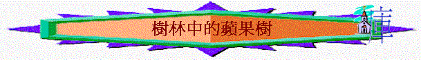

樹林中的蘋果樹
「我的良人在男子中，如同蘋果樹在樹林中。我歡歡喜喜坐在他的蔭下，嘗他果子的滋味覺得甘甜。」
歌2:3
一.)非凡突出的樹
「蘋果樹在樹林中」此寫法暗示在樹林中有兩種樹，一類是蘋果樹，二類是樹林中其他的樹。明顯兩者不同，而此蘋果樹既然能夠被人在眾多樹中點名抽出來，而也令人在眾多樹中只走近此樹。其樹一定十分突出、與眾不同、人看為寶，才能惹起人注意。而的確，在佳偶眼中，良人非同一般男子，他是在眾男子中最突出、最令她注目，看為至寶的。保羅對基督也有如此看法，，和世界相比，基督如至寶，世界則如糞土(腓3:8)，世界而惹不起保羅注意(相比下)，反而基督更顯突出，更成為他至寶。
二.)吸引人來的樹
佳偶能在眾樹中，單來到蘋果(良人)坐下，顯明此樹有莫大的吸引力。主耶穌一樣，祂高舉十架，就能吸引萬人歸向祂(約12:12)，保羅世被主吸引，情願離世與基督同在，因這是好得無比的(腓2:23)
三.)使人安息的樹
人坐在樹蔭下，往往是休息、避暑，而佳偶一樣，願坐在蘋果樹蔭下(指良人蔭下)，從「坐」，「歡歡喜喜」等詞，証明她深信此樹蔭能發揮其功效，可以使她得到真正安息，所以才「歡歡喜喜」坐下此樹，十分放心。主耶穌一樣，也是能使人安息，凡勞苦擔重擔的人，可以到的這裡來，祂就使他們得到真正心靈的安息(約11:28)。
四.)人能嘗試的樹
佳偶能享嘗樹的果子，能感覺滋味，証明此樹是可以給人享嘗，並且能享受到甘甜味道。詩34:8「你們要嘗嘗主恩的滋味，便知道祂是美善......」，而彼前2:3更說我們可以嘗主恩的滋味，約1:14,16更指出基督是充滿恩典的，我們可以從祂豐富中領受，所以從主裡面，可以享受主的豐富，主的恩典的。
五.)與人聯合的樹
「果子」就是蘋果機本身的一部分，人吃了，蘋果樹的生命，元素就進入人裡，被人吸收。佳偶吃了果子後，不但覺得有味道，而且是甘甜的，因果子的元素已進入她口中，而且蘋果更能使人暢快內心(歌2:5)，蘋果樹的生命進入人內，竟然能改變人的內心、感覺。這樣，祂可以在人裡面，使人成為新造的人(林後5:17)，而且主更能住在人裡面，與我們的生命聯合、相交，使人心裡得充足的喜樂、暢快(約壹1:3-4,5:20)